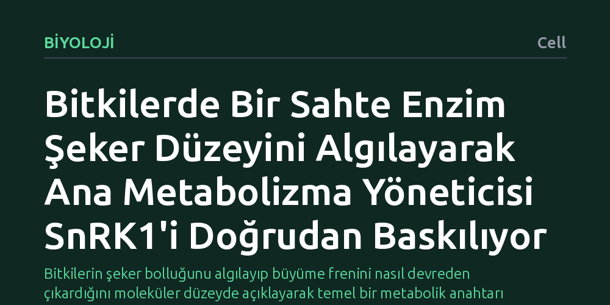

BIYOLOJI · Cell · 2026-10-19
Araştırmacılar, bitkilerin hücresel şeker miktarını büyüme ve enerji yönetimiyle nasıl koordine ettiğini inceledi. Model bitki Arabidopsis'te sınıf II T6P sentaz adlı sahte enzimin trehaloz-6-fosfatı algılayarak ana metabolizma düzenleyicisi SnRK1'i doğrudan baskıladığı belirlendi.
Bitkilerin şeker bolluğunu algılayıp büyüme frenini nasıl devreden çıkardığını moleküler düzeyde açıklayarak temel bir metabolik anahtarı gün yüzüne çıkarıyor.

Bitkiler, fotosentez yoluyla ürettikleri şekeri sürekli izlemek ve büyüme ile enerji tüketimi arasında hassas bir denge kurmak zorundadır. Ortamda yeterli karbon ve enerji bulunmadığında hücrelerin kaynaklarını koruması ve büyümeyi yavaşlatması gerekirken, şeker bol olduğunda bu kısıtlamaların kaldırılarak gelişimin desteklenmesi hayati önem taşır. Bu dengenin merkezinde, hücresel enerjinin azaldığını haber veren ve enerji tasarrufu modunu devreye sokan SnRK1 adlı ana metabolik kontrol enzimi yer alır.
Ancak bitki biyolojisinde uzun süredir yanıt bekleyen temel bir soru vardı: Bitki hücreleri, fotosentez sonucu üretilen şekerin yeterli seviyede olduğunu tam olarak hangi moleküler mekanizmayla anlar ve bu bilgiyi SnRK1 gibi merkezi bir yöneticiye nasıl aktarır? Şeker bolluğunun göstergesi olan trehaloz-6-fosfat (T6P) molekülünün varlığı bilinse de, bu sinyali doğrudan algılayıp metabolik anahtara ileten özgül moleküler sensörün kimliği tam olarak aydınlatılamamıştı.
Araştırmacılar, bu sorunun yanıtını bulmak için bitki genetiğinde standart model organizma olarak kabul edilen hardal familyasından Arabidopsis thaliana (farekulağı teresi) bitkisine yöneldiler. Çalışmada, hücre içinde şeker miktarındaki dalgalanmalar ile metabolik sinyal iletimi arasındaki doğrudan protein etkileşimlerini inceleyen biyokimyasal ve moleküler biyoloji yöntemleri bir arada kullanıldı.
Ekip, hücresel düzeyde şeker seviyelerini temsil eden trehaloz-6-fosfat molekülü ile etkileşime giren aday proteinleri laboratuvar ortamında kontrollü deneylerle test etti. Özellikle şeker sentez yolunda yer alan ancak klasik biyokimyasal tepkimeleri yürütmeyen protein ailelerinin SnRK1 kompleksi üzerindeki doğrudan baskılayıcı etkileri biyokimyasal analizlerle adım adım takip edildi.
Elde edilen bulgular, hücrede katalitik olarak etkisiz görünen ve bu nedenle sahte enzim olarak adlandırılan sınıf II trehaloz-6-fosfat sentaz proteininin kritik bir görevi üstlendiğini gösterdi. Bu protein, klasik anlamda bir kimyasal dönüşüm gerçekleştirmek yerine, hücre içindeki T6P molekülünü doğrudan bağlayan özelleşmiş bir moleküler algılayıcı olarak işlev görüyor.
Çalışma, T6P miktarının arttığı yani şekerin bol olduğu koşullarda bu sahte enzimin doğrudan SnRK1 enzim kompleksine bağlanarak onu baskıladığını ortaya koydu. Başka bir deyişle, enerji tasarrufu freni olan SnRK1 devreden çıkarılarak bitkinin kaynaklarını büyümeye ve biyokütle üretimine yöneltmesi sağlanıyor. Araştırmacılar bu durumu, bitkilerde karbon bulunabilirliğini metabolik dengeye bağlayan korunmuş bir moleküler anahtar olarak tanımlıyor.
Bu çalışmanın ortaya koyduğu mekanizma, bitkilerin besin bolluğunu büyüme süreçlerine nasıl tercüme ettiğine dair temel bir eksikliği gideriyor. Şeker sinyali ile metabolizma denetleyicisi arasındaki doğrudan fiziksel bağın netleşmesi, bitkilerin değişken ışık ve besin koşullarında içsel dengelerini nasıl koruduklarını anlamamızı sağlıyor.
Elde edilen bilginin uzun vadede kültür bitkilerinde fotosentez ürünlerinin daha verimli kullanılmasına ve kuraklık gibi stres koşullarında büyüme ile hayatta kalma dengesinin optimize edilmesine katkı sağlama potansiyeli bulunuyor. Bununla birlikte, söz konusu moleküler devrenin tarla koşullarında ve farklı tarım ürünlerinde nasıl davrandığının incelenmesi sonraki çalışmaların konusu olmaya devam ediyor.